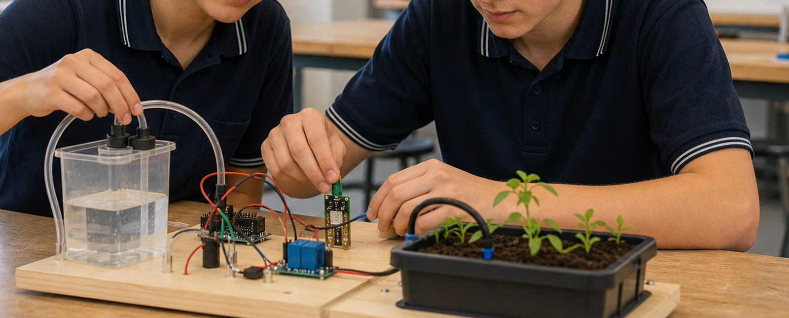
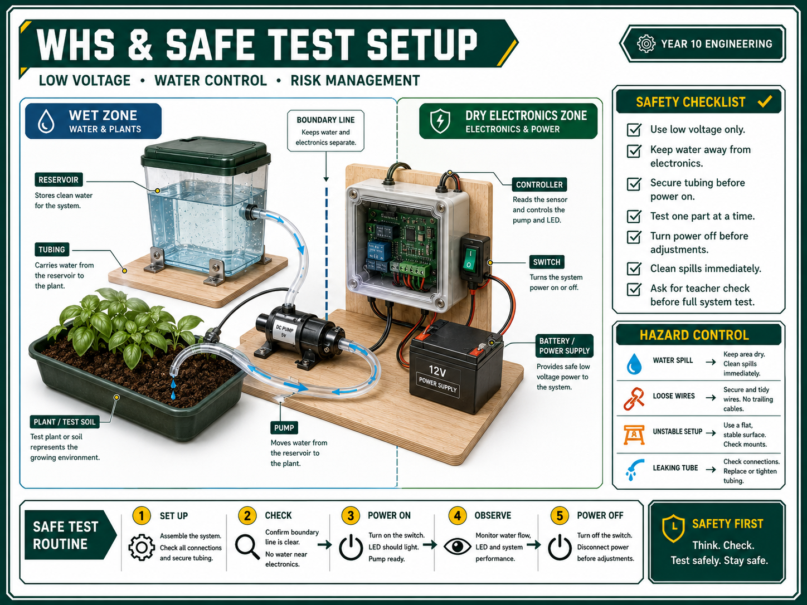
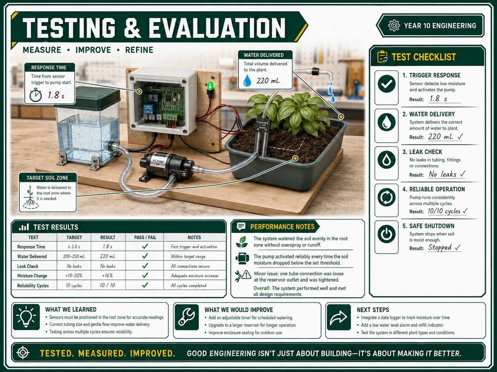

Build the Garden Watering System prototype: Use the approved Toolkit 3 plan to assemble the base, reservoir, tubing, input, controller and output safely.
Test subsystems before the whole system: Check the water path, input device, control logic and output device separately before joining everything together.
Fault-find using evidence: Record faults, likely causes, fixes attempted and retest results instead of guessing wildly and hoping the bench dries by lunch.
Collect performance data: Measure response time, water delivered, leaks, repeatability and successful test cycles using consistent units.
Evaluate the final design: Explain reliability, safety, sustainability, water efficiency and improvements using control-system language.
Prepare folio evidence: Use photos, diagrams, tables, fault logs and evaluation paragraphs to show professional engineering practice.
Timing: Complete Toolkit 4 after your design plan has been checked. Build carefully, test in short cycles, then use the evidence in your final portfolio and assessment work.
Google Classroom Check-in
Teacher setup: Add the final build, testing and evaluation topic link once the Google Classroom task is created.
Student evidence: Upload build progress photos, subsystem test results, a fault log and final test data.
Final submission: Submit the portfolio workbook section covering build process, testing, improvements and final evaluation.
Build
From Plan to Prototype

Why this matters: Toolkit 4 is where the Year 10 project becomes real. Good engineering is not just making the system work once. It is making it work safely, repeatedly and with evidence.
Your prototype should demonstrate:
Planned assembly: Follow the Toolkit 3 build sequence so water, wiring and moving parts are installed in a sensible order.
Build quality: Secure parts, label wires and tubes, separate wet and dry zones and avoid messy connections that hide faults.
Controlled testing: Test one variable at a time so the cause of a problem or improvement is clear.
Technical communication: Explain results using terms such as input, process, output, feedback, threshold, response time, repeatability and reliability.
1. Water path
Build and leak-test the reservoir, pump or valve, tubing and outlet before powering the control system.
2. Control path
Test the input, controller and output separately with the teacher-approved power supply.
3. Whole system
Connect the sections only after each subsystem behaves reliably on its own.
Safe Build Protocol

1) Pre-build teacher check
Show the final layout, circuit/control plan, component list and testing method from Toolkit 3.
Confirm the low-voltage power source, pump or valve rating, tool access and any water-handling limits.
Identify the wet zone, dry electronics zone, catch tray and safe access point for switches or reset buttons.
2) Assemble the water path first
Fix the reservoir/container securely so it cannot tip during testing.
Install tubing with smooth bends. Avoid kinks, unsupported loops and tight bends at fittings.
Run a gravity or hand test where possible to check leaks before adding electrical control.
Record any leaks, drips or weak joins in the fault log.
3) Assemble the electronics dry
Keep the controller, battery, breadboard, switches and wiring joins away from the water path.
Label input, process and output connections so faults can be traced quickly.
Use strain relief or tape where wires and tubes could be pulled loose during testing.
Ask for a teacher check before powering the system or running a wet test.
4) Record build changes
Photograph the approved plan, the build stages and any changes made during construction.
Explain why the change was needed: safety, reliability, space, component limits or improved water delivery.
Make changes one at a time so you can tell what actually improved the system.
Test
Subsystem Testing

Do not start with the full system. That is how you create four possible problems at once and learn nothing except new swear words. Test in layers.
Output and Water Delivery Test
Can the pump or valve move water reliably from the reservoir to the target area?
Does the tubing leak, kink, block or spray outside the intended zone?
How much water is delivered in a fixed time, such as 10 seconds or 30 seconds?
Does the output stop cleanly, or does water continue to drip or siphon?
Input and Threshold Test
Does the sensor, switch or timer change state when expected?
Is the trigger threshold too sensitive, too slow or inconsistent?
Can the input be reset and tested again under the same conditions?
Does the input need better placement, shielding or calibration?
Control Logic Test
Does the input correctly control the output through the process/controller?
Does the system stop when soil is wet, rain is detected, time has elapsed or the tank is low?
Does the system behave the same way over several test cycles?
Can a fault condition be detected or explained?
Whole-System Test
Run at least three full cycles under the same conditions and record the result each time.
Change one condition, such as dry/wet soil or full/low reservoir, and record the system response.
Use photos or video to capture leaks, delays, sensor response and final watering coverage.
Testing Tables and Fault Log
Use simple tables. The goal is not spreadsheet theatre. The goal is evidence you can actually use in your evaluation.
Example Test Data Table
Test
Condition
Expected Response
Measured Result
Pass / Improve
Output flow
Pump on for 10 seconds
Water reaches target area
Record mL delivered and leaks
Pass or improvement needed
Input threshold
Dry sample, then wet sample
System recognises change
Record reading, delay or trigger point
Pass or recalibrate
Full cycle
Dry garden area, tank filled
Watering starts, then stops correctly
Record response time and water volume
Pass or improve
Example Fault Log
Fault
Likely Cause
Fix Attempted
Retest Result
Pump runs but little water reaches outlet
Kinked tube, low battery, blocked fitting or air in line
Straighten tube, check power, clear fitting, prime pump
Record new flow rate and whether the fault returned
System waters when soil is already wet
Threshold too low, sensor in wrong location or poor contact
Recalibrate threshold and move sensor to better test point
Record dry/wet readings after adjustment
Water leaks near electronics
Tube join loose or wet/dry zones too close
Move electronics, secure join and add catch tray
Teacher check before powering again
Making Sense of Results
Reliability
Count successful cycles out of total cycles, such as 4 successful cycles out of 5.
Describe whether failures were random or linked to a clear condition.
Explain whether the fix improved repeatability.
Water Efficiency
Measure water delivered in millilitres during a timed test.
Compare water delivered to the target area against water lost through leaks, overspray or poor outlet placement.
Explain whether a timed output, sensor threshold or improved outlet would reduce waste.
Safety and Maintenance
Explain how wet and dry zones were kept separate.
Identify any remaining risks: unstable reservoir, loose wiring, exposed joins, blocked tubing or poor battery access.
Comment on repairability. A system that can be fixed and retested is better than a sealed mystery box.
Strong Evaluation Language
Avoid writing "it worked good". Aim for evidence-based sentences like this:
The prototype watered the target area reliably in 4 out of 5 test cycles. The failed cycle was caused by a kinked outlet tube, which reduced flow from 80 mL to 25 mL in 10 seconds. After repositioning the tube and securing it to the base, the system completed three successful cycles with no leaks.
Improvement Process
Improvements should be controlled and documented. Do not change every part at once, because then you cannot explain which change made the difference.
Name the problem: Use the test data or fault log to identify the main issue.
Choose one fix: Adjust sensor position, threshold, tube route, outlet, mounting, power or control timing.
Predict the effect: State what should improve and how you will measure it.
Retest the same way: Repeat the original test conditions so the comparison is fair.
Record the result: Use data, photos and a short explanation in the folio.
Folio Structure & Evidence
Your folio should read like a short engineering report, not just a collection of photos. Use the portfolio workbook to organise the evidence.
Cover and brief: project title, group members, user need, constraints and success criteria.
Research and theory: control systems notes, input-process-output diagram and feedback explanation.
Design: concept sketches, final layout, irrigation diagram, circuit/control plan and algorithm.
Build log: dated photos, teacher check points, build changes and reasons for changes.
Testing: subsystem tests, full-system data table, fault log, photos or video stills.
Evaluation: judgement about reliability, water efficiency, safety, sustainability and improvements.
Reflection: what you would keep, change or test next if building a second version.
Quality target: Every major claim in the evaluation should be supported by a photo, test result, fault log entry or diagram.
Portfolio Checklist
Approved Toolkit 3 plan included or referenced.
Build photos showing water path, control path and final assembled prototype.
Wet zone and dry electronics zone clearly labelled.
Subsystem test table: water delivery, input/threshold and output/control response.
Whole-system test table with repeated cycles.
Fault log showing problem, cause, fix and retest result.
Final evaluation paragraph using control-system terminology.
Safety, sustainability, water efficiency and maintenance comments.
Specific improvement recommendations based on test evidence.
Garden Watering Test & Folio Q&A
Why should you test subsystems before testing the whole garden watering system?
Subsystem testing isolates faults. If the water path, input and output are tested separately first, it is much easier to identify whether a problem comes from a leak, sensor threshold, wiring fault, power issue or control logic.
What data should be collected during a full-system test?
Useful data includes trigger condition, response time, water delivered, successful cycles, leaks, faults, sensor readings if available and whether the system stopped correctly.
How does a fault log improve the final evaluation?
A fault log shows the engineering process. It proves that the team identified problems, predicted causes, tried fixes and retested the system. This gives stronger evidence than simply saying the final design worked or did not work.
Why is repeatability more useful than one successful test?
One successful test may be luck. Repeatability shows that the system can perform the same function under the same conditions several times, which is a much better measure of reliability.
What makes a strong final evaluation paragraph?
A strong paragraph makes a clear judgement, supports it with test data, names specific faults or improvements and links back to the brief using control-system terms such as input, process, output, feedback, threshold and reliability.
How can the prototype be evaluated for sustainability?
Evaluate sustainability by considering water waste, energy use, repairability, component choice, material waste and whether the control system waters only when needed.
Why should improvements be tested one at a time?
Testing one improvement at a time makes the comparison fair. If several changes are made at once, it becomes difficult to explain which change improved reliability, water delivery or safety.
What evidence should be included in the build log?
The build log should include dated photos, notes about assembly steps, teacher check points, changes from the original plan, problems found and reasons for any design modifications.